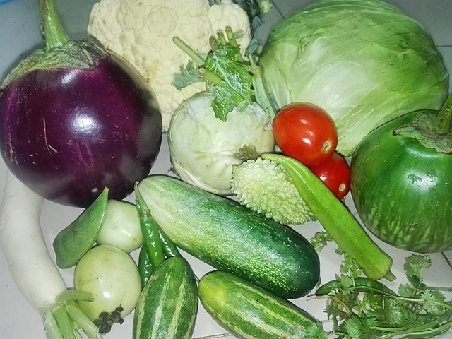

Vegetables are parts of plants that are consumed by humans as food as part of a meal.
Originally, vegetables were collected from the wild by hunter-gatherers and entered cultivation in several parts of the world, probably during the period 10,000 BC to 7,000 BC